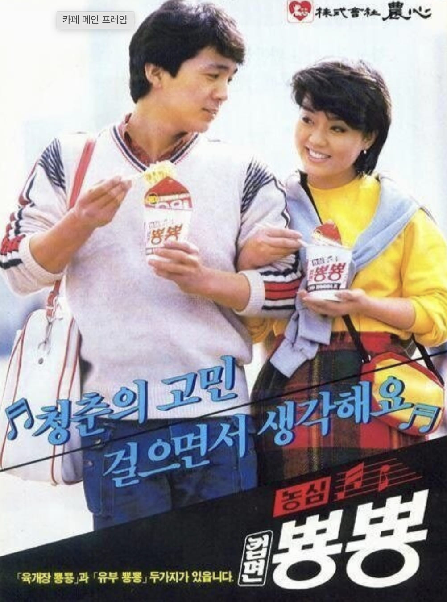

박중훈, 이미숙
청춘의 고민 걸으면서 생각해요

청춘의 고민 걸으면서 생각해요
박중훈은 1980년대와 1990년대를 대표하는 대한민국의 배우로, 영화와 드라마를 넘나들며 청춘 스타로 큰 인기를 얻었다. 특유의 친근하고 활기찬 이미지로 대중의 사랑을 받았으며, 이후 한국 영화계를 대표하는 배우 중 한 명으로 성장했다.
이미숙은 세련된 분위기와 뛰어난 연기력으로 사랑받아 온 배우이다. 1980년대부터 다양한 영화와 드라마에 출연하며 당대 최고의 여배우로 자리매김했으며, 우아하고 도시적인 이미지로 광고계에서도 큰 인기를 누렸다.
농심 컵라면은 뜨거운 물만 부으면 간편하게 즐길 수 있는 즉석식품으로, 바쁜 일상 속에서 빠르고 편리한 한 끼를 제공하며 큰 인기를 얻었다. 특히 학생과 직장인들에게 사랑받으며 국내 컵라면 시장 성장에 중요한 역할을 했다.
광고는 젊은 세대의 고민과 일상을 자연스럽게 담아내며 컵라면을 청춘의 간편한 식사로 표현했다. 박중훈과 이미숙의 신선하고 세련된 이미지는 제품의 젊은 감각을 강조했고, 당시 소비자들에게 큰 공감을 얻으며 높은 인지도를 형성했다.
1980년대는 TV 광고가 대중문화의 중심으로 자리 잡은 시기였다. 식품 광고는 단순히 제품을 소개하는 것을 넘어 젊음, 낭만, 우정과 같은 감성적인 메시지를 전달하는 경우가 많았다. 특히 인기 배우를 모델로 기용해 제품 이미지를 강화하는 스타 마케팅이 활발하게 이루어졌다.